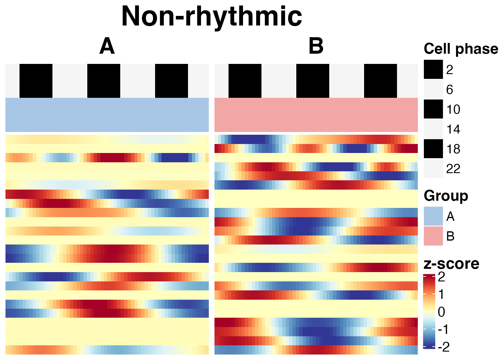
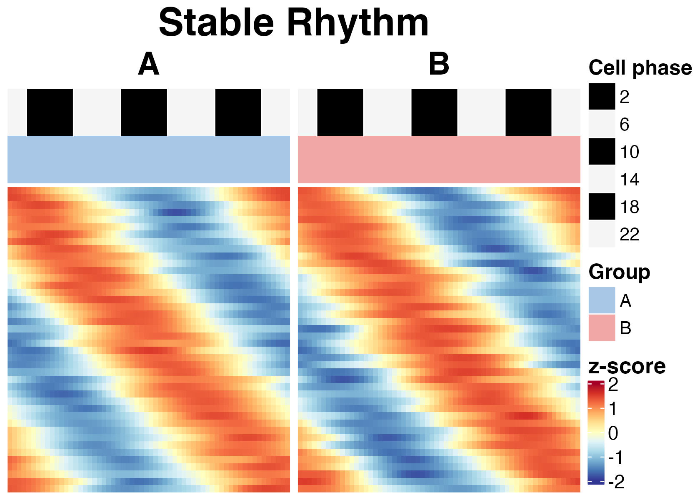
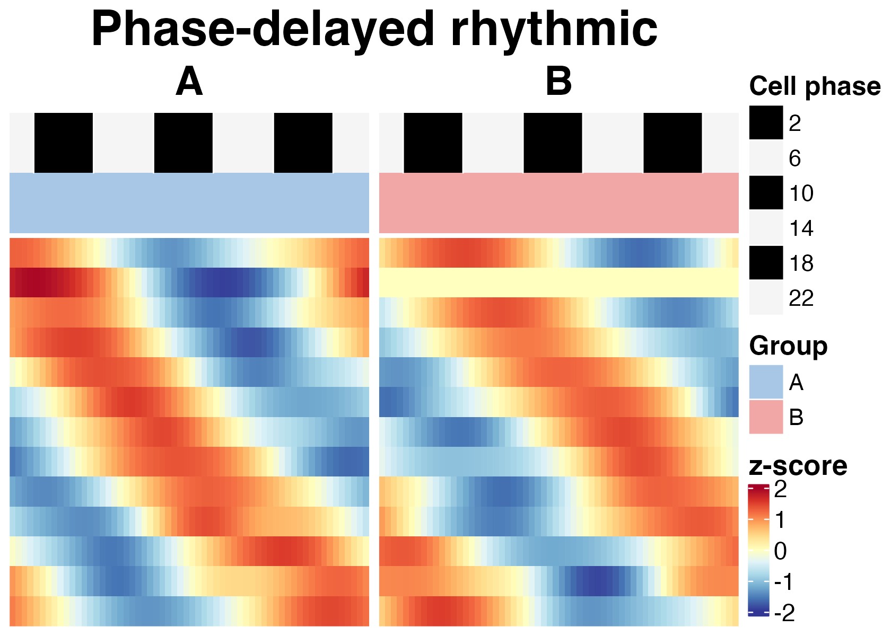
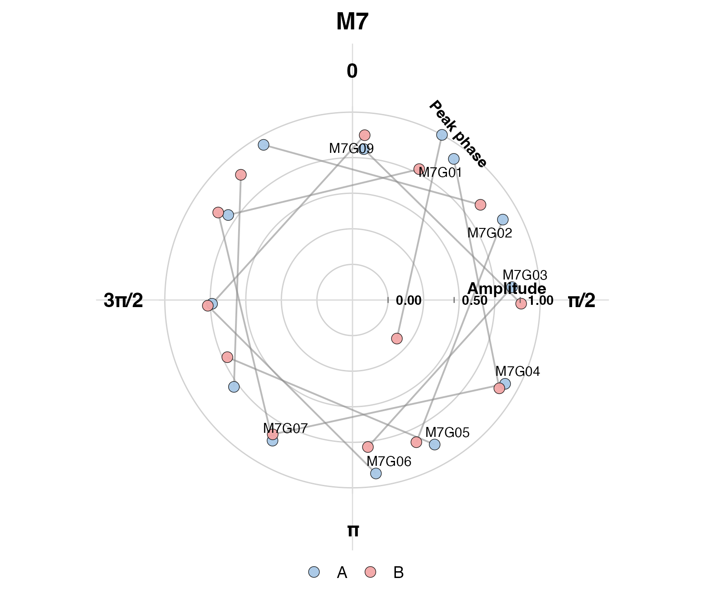

Overview
This tutorial describes the rhythm-state module branch of
scRhythmBayes.
The module branch is the main workflow for a two-group
rhythm-state comparison within a defined biological context. A
typical use case is condition A versus condition
B within one selected cell type.
The workflow has five steps:
- infer cell-level circadian phase;
- select the biological context for comparison;
- estimate gene-level rhythmic parameters for the two groups;
- infer differential rhythm-state modules;
- visualize module-level remodeling using heatmaps and polar plots.
This tutorial focuses on the condition comparison within cell type
1. For direct cell-type comparisons or one-vs-rest
discovery, see the basic workflow and OVR tutorials.
Load package and example data
library(scRhythmBayes)
data("srb_example_data")
count <- srb_example_data$Count
metadata <- srb_example_data$meta
dim(count)
#> NULL
head(metadata)
#> cell sample replicate ZT celltype condition
#> Cell_0001_001 Cell_0001_001 A_ZT00_R1 1 0 1 A
#> Cell_0001_002 Cell_0001_002 A_ZT00_R1 1 0 1 A
#> Cell_0001_003 Cell_0001_003 A_ZT00_R1 1 0 1 A
#> Cell_0001_004 Cell_0001_004 A_ZT00_R1 1 0 1 A
#> Cell_0001_005 Cell_0001_005 A_ZT00_R1 1 0 1 A
#> Cell_0001_006 Cell_0001_006 A_ZT00_R1 1 0 1 A
#> T_true Theta_true Theta_noisy r_sim
#> Cell_0001_001 23.7745644 6.22416640 6.0883578 0.7240322
#> Cell_0001_002 23.7111107 6.20755425 6.0324486 0.6303893
#> Cell_0001_003 22.2182691 5.81672924 5.8263271 0.8666633
#> Cell_0001_004 0.5581621 0.14612650 0.2245110 0.8593562
#> Cell_0001_005 0.7203817 0.18859549 0.3327113 0.6901345
#> Cell_0001_006 0.1788832 0.04683152 0.1722017 0.7564754
table(metadata$celltype, metadata$condition)
#>
#> A B
#> 1 360 360
#> 2 360 360
#> 3 360 360The required inputs are:
| Object | Description |
|---|---|
count |
Gene-by-cell count matrix |
metadata |
Cell-level metadata containing sampling time, cell type, and condition |
ZT |
Sampling Zeitgeber time column used for phase inference |
celltype |
Cell-type label used as the phase-inference stratum |
condition |
Two-group comparison variable for module analysis |
sample |
Independent biological sample for sample-aware testing |
Step 1: infer cell-level circadian phase
The module workflow starts from inferred cell phases. These phases are used as latent temporal coordinates for fitting gene-level rhythmic parameters.
res_phase <- infer_cell_phase(
count = count,
metadata = metadata,
ZT_by = "ZT",
strata_by = "celltype",
Species = "mouse",
setseed = 1,
Verbose = FALSE
)
head(res_phase)
#> # A tibble: 6 × 7
#> cell ZT_input stratum theta_pred ZT_pred Rbar r_cell
#> <chr> <dbl> <chr> <dbl> <dbl> <dbl> <dbl>
#> 1 Cell_0001_001 0 1 6.19 23.6 0.992 0.999
#> 2 Cell_0001_002 0 1 6.23 23.8 0.991 0.999
#> 3 Cell_0001_003 0 1 6.00 22.9 0.991 0.999
#> 4 Cell_0001_004 0 1 6.14 23.4 0.989 0.999
#> 5 Cell_0001_005 0 1 0.142 0.543 0.992 0.999
#> 6 Cell_0001_006 0 1 0.137 0.524 0.991 0.999The output res_phase contains one row per cell.
| Column | Description |
|---|---|
cell |
Cell identifier |
ZT_input |
Observed sampling Zeitgeber time |
stratum |
Stratum used during phase inference |
theta_pred |
Inferred cell-level circadian phase in radians |
ZT_pred |
Inferred phase converted to 24-hour time |
Rbar |
Aggregate phase concentration statistic |
r_cell |
Cell-level phase reliability weight |
The two key columns for downstream modeling are
theta_pred and r_cell.
Step 2: select one cell type for two-condition analysis
The recommended module-analysis design is to compare two groups
within a defined biological context. Here, we select cell type
1 and compare condition A versus condition
B.
cell_use <- as.character(metadata$celltype) == "1"
count_use <- count[, cell_use, drop = FALSE]
metadata_use <- metadata[cell_use, , drop = FALSE]
res_phase_use <- res_phase[cell_use, , drop = FALSE]
dim(count_use)
#> [1] 138 720
table(metadata_use$condition)
#>
#> A B
#> 360 360This subset contains only cells from cell type 1. The
downstream model estimates rhythmic parameters separately for condition
A and condition B.
Step 3: estimate gene-level rhythmic parameters
Input
The gene-level model requires the selected count matrix, selected metadata, inferred cell phase, cell-level reliability weight, and a grouping variable.
| Argument | Description |
|---|---|
count |
Gene-by-cell count matrix for the selected cell subset |
metadata |
Metadata for the same cells |
theta_pred |
Inferred cell phase from res_phase
|
r_cell |
Cell-level phase reliability weight |
strata_by |
Grouping variable for gene-level parameter estimation, here
condition
|
sample_by |
Independent biological-sample column |
sample_boot_by |
Sample-bootstrap stratum, here ZT |
Run gene-level parameter inference
res_param <- infer_gene_param(
count = count_use,
metadata = metadata_use,
theta_pred = res_phase_use$theta_pred,
r_cell = res_phase_use$r_cell,
strata_by = "condition",
ZT_by = "ZT",
sample_by = "sample",
sample_boot_by = "ZT",
B = 3,
n_worker = 1,
setseed = 1,
Verbose = FALSE
)
res_param$inference
#> $mode
#> [1] "restricted_null_cluster_multiplier_score"
#>
#> $sample_by
#> [1] "sample"
#>
#> $sample_boot_by
#> [1] "ZT"
#>
#> $P_value
#> [1] "restricted-null biological-sample cluster multiplier score test with Rademacher weights"
#>
#> $LRT
#> [1] "original cell-independence working-likelihood diagnostic only"
#>
#> $CI
#> [1] "whole-sample pairs bootstrap for top 100 ranked genes only"
#>
#> $fixed_inputs
#> [1] "theta_pred" "r_cell" "size_factors"
#>
#> $sample_counts
#> A B
#> 18 18
#>
#> $effect_size
#> [1] "joint MAP shrinkage may change only the added shrunk coefficient/amplitude columns; sample-aware P_value/FDR remain score-test based"Inspect output tables
head(res_param$param_long)
#> gene condition Mesor Mean Amplitude Amplitude_shrunk Phase
#> 1 M0G01 A 1.755320 5.785298 0.01436746 0.01430728 2.8477570
#> 2 M0G02 A 1.921771 6.833052 0.13579497 0.13523794 0.8647751
#> 3 M0G03 A 2.204746 9.067948 0.11505040 0.11465868 3.6479931
#> 4 M0G04 A 1.426698 4.164923 0.07420760 0.07369124 5.1644391
#> 5 M0G05 A 1.539609 4.662766 0.16339559 0.16243396 1.3293299
#> 6 M0G06 A 1.902031 6.699489 0.08399906 0.08362891 4.5692592
#> Alpha Dropout_rate P_value FDR
#> 1 0.08455367 0.1359375 0.9685 0.9685000
#> 2 0.10384658 0.1192342 0.2306 0.2816177
#> 3 0.10989510 0.1215711 0.0990 0.1265000
#> 4 0.06151541 0.2681402 0.4694 0.5159667
#> 5 0.07776356 0.2308580 0.0808 0.1051925
#> 6 0.08152373 0.1846818 0.3260 0.3812542
head(res_param$param_wide)
#> # A tibble: 6 × 22
#> gene Mesor_A Mesor_B Mean_A Mean_B Amplitude_A Amplitude_B Amplitude_shrunk_A
#> <chr> <dbl> <dbl> <dbl> <dbl> <dbl> <dbl> <dbl>
#> 1 M0G01 1.76 1.78 5.79 5.93 0.0144 0.00395 0.0143
#> 2 M0G02 1.92 1.88 6.83 6.58 0.136 0.101 0.135
#> 3 M0G03 2.20 2.23 9.07 9.31 0.115 0.0534 0.115
#> 4 M0G04 1.43 1.49 4.16 4.43 0.0742 0.0876 0.0737
#> 5 M0G05 1.54 1.55 4.66 4.70 0.163 0.197 0.162
#> 6 M0G06 1.90 1.87 6.70 6.49 0.0840 0.104 0.0836
#> # ℹ 14 more variables: Amplitude_shrunk_B <dbl>, Phase_A <dbl>, Phase_B <dbl>,
#> # Alpha_A <dbl>, Alpha_B <dbl>, Dropout_rate_A <dbl>, Dropout_rate_B <dbl>,
#> # FDR_A <dbl>, FDR_B <dbl>, Delta_Mesor <dbl>, Delta_Mean <dbl>,
#> # Delta_Amp <dbl>, Delta_Amp_shrunk <dbl>, Delta_Phase <dbl>The long-format table stores rhythmic parameters for each group. The wide-format table is used for paired module comparison.
| Output | Description |
|---|---|
param_long |
Long-format gene-level rhythmic parameter estimates for each group |
param_wide |
Wide-format paired parameter table for downstream module analysis |
bootstrap_res |
Bootstrap results if available |
Common columns include:
| Column | Meaning |
|---|---|
gene |
Gene name |
Mesor |
Baseline rhythmic expression level |
Mean |
Mean expression level |
Amplitude |
Circadian oscillation amplitude |
Amplitude_shrunk |
Empirical-Bayes stabilized amplitude |
Phase |
Rhythmic phase in radians |
Alpha |
Dispersion-related parameter |
Dropout_rate |
Estimated dropout rate |
P_value |
Rhythmicity P value from the active inference mode |
FDR |
Adjusted rhythmicity significance |
Step 4: infer differential rhythm-state modules
The module model compares rhythmic parameters between two groups and assigns genes to interpretable rhythm-state remodeling classes.
res_module <- infer_rhythm_module(
param_wide = res_param$param_wide,
compare_by = "condition",
group1 = "A",
group2 = "B",
out_dir = NULL,
Verbose = FALSE
)
head(res_module$module_result)
#> # A tibble: 6 × 27
#> gene compare_by group1 group2 FDR_A FDR_B Amplitude_A Amplitude_B Phase_A
#> <chr> <chr> <chr> <chr> <dbl> <dbl> <dbl> <dbl> <dbl>
#> 1 M0G01 condition A B 0.968 0.995 NA NA NA
#> 2 M0G02 condition A B 0.282 0.518 NA NA NA
#> 3 M0G03 condition A B 0.126 0.715 NA NA NA
#> 4 M0G04 condition A B 0.516 0.472 NA NA NA
#> 5 M0G05 condition A B 0.105 0.0661 NA NA NA
#> 6 M0G06 condition A B 0.381 0.0967 NA NA NA
#> # ℹ 18 more variables: Phase_B <dbl>, delta_phi_rad <dbl>, rA <dbl>, u <dbl>,
#> # v <dbl>, seed_module <int>, module_map <int>, module_name <chr>,
#> # post_M0 <dbl>, post_M1 <dbl>, post_M2 <dbl>, post_M3 <dbl>, post_M4 <dbl>,
#> # post_M5 <dbl>, post_M6 <dbl>, post_M7 <dbl>, post_max <dbl>, margin <dbl>
table(res_module$module_result$module_name, useNA = "ifany")
#>
#> Amplitude-attenuated rhythmic Amplitude-enhanced rhythmic
#> 13 12
#> Non-rhythmic Phase-advanced rhythmic
#> 24 12
#> Phase-delayed rhythmic Rhythm Gain
#> 13 12
#> Rhythm Loss Stable Rhythm
#> 10 42The module result summarizes whether genes remain rhythmic, gain rhythmicity, lose rhythmicity, shift phase, change amplitude, or show other rhythm-state remodeling patterns.
Important output columns include:
| Column | Description |
|---|---|
gene |
Gene name |
compare_by |
Comparison variable |
group1, group2
|
Compared groups |
FDR_A, FDR_B
|
Rhythmicity FDR in each group |
Amplitude_A, Amplitude_B
|
Rhythmic amplitude in each group |
Phase_A, Phase_B
|
Rhythmic phase in each group |
delta_phi_rad |
Phase shift between groups in radians |
module_name |
Assigned rhythm-state remodeling module |
post_max |
Maximum posterior module probability |
margin |
Difference between top posterior probabilities |
Step 5: visualize rhythm-state modules
Build the module heatmap object
The module heatmap summarizes phase-ordered expression patterns for genes assigned to rhythm-state modules.
hm_module <- plot_module_heatmap(
count = count_use,
res_phase = res_phase_use,
gene_meta = res_module$module_result,
metadata = metadata_use,
group_by = "condition",
group1 = "A",
group2 = "B"
)
hm_module
#> scRhythmModuleHeatmap object
#> module module_name n_gene_input n_gene_final
#> module0 0 Non-rhythmic 24 24
#> module1 1 Stable Rhythm 42 42
#> module2 2 Rhythm Gain 12 12
#> module3 3 Rhythm Loss 10 10
#> module4 4 Amplitude-enhanced rhythmic 12 12
#> module5 5 Amplitude-attenuated rhythmic 13 13
#> module6 6 Phase-advanced rhythmic 12 12
#> module7 7 Phase-delayed rhythmic 13 13
#> ref_group status n_phase_ordered n_phase_missing
#> module0 A ok 0 24
#> module1 A ok 42 0
#> module2 B ok 12 0
#> module3 A ok 10 0
#> module4 B ok 12 0
#> module5 A ok 13 0
#> module6 A ok 12 0
#> module7 A ok 13 0Plot selected module heatmaps
The following plots display selected module IDs. This keeps the tutorial compact while still showing the heatmap output format.
plot(hm_module, module_id = 0)
plot(hm_module, module_id = 1)
plot(hm_module, module_id = 7)
The heatmap shows expression patterns ordered by inferred cell phase and separated by condition. It is useful for checking whether genes assigned to a module show coherent phase-resolved expression patterns across the compared groups.
Optional: plot all eight module heatmaps
If a complete visual inspection is needed, all eight module IDs can be plotted.
plot(hm_module, module_id = 0)
plot(hm_module, module_id = 1)
plot(hm_module, module_id = 2)
plot(hm_module, module_id = 3)
plot(hm_module, module_id = 4)
plot(hm_module, module_id = 5)
plot(hm_module, module_id = 6)
plot(hm_module, module_id = 7)Keeping the full set as eval = FALSE can reduce vignette
build time and avoid generating an overly long article page. If the goal
is a fully visual GitHub Pages tutorial, these lines can be split into
separate evaluated chunks.
Step 6: plot rhythm remodeling in polar space
The polar plot displays rhythmic remodeling in amplitude-phase space. Phase is represented by angular position and amplitude by radial distance.
p_polar <- plot_module_polar(
gene_meta = res_module$module_result,
module_id = 7,
group1 = "A",
group2 = "B"
)
p_polar$plot
This plot is useful for inspecting how genes in a selected module are distributed by rhythmic amplitude and phase.
Recommended minimal workflow
data("srb_example_data")
count <- srb_example_data$Count
metadata <- srb_example_data$meta
res_phase <- infer_cell_phase(
count = count,
metadata = metadata,
ZT_by = "ZT",
strata_by = "celltype",
Species = "mouse",
setseed = 1,
Verbose = FALSE
)
cell_use <- as.character(metadata$celltype) == "1"
count_use <- count[, cell_use, drop = FALSE]
metadata_use <- metadata[cell_use, , drop = FALSE]
res_phase_use <- res_phase[cell_use, , drop = FALSE]
res_param <- infer_gene_param(
count = count_use,
metadata = metadata_use,
theta_pred = res_phase_use$theta_pred,
r_cell = res_phase_use$r_cell,
strata_by = "condition",
ZT_by = "ZT",
sample_by = "sample",
sample_boot_by = "ZT",
B = 3,
n_worker = 1,
setseed = 1,
Verbose = FALSE
)
res_module <- infer_rhythm_module(
param_wide = res_param$param_wide,
compare_by = "condition",
group1 = "A",
group2 = "B",
out_dir = NULL,
Verbose = FALSE
)
hm_module <- plot_module_heatmap(
count = count_use,
res_phase = res_phase_use,
gene_meta = res_module$module_result,
metadata = metadata_use,
group_by = "condition",
group1 = "A",
group2 = "B"
)
plot(hm_module, module_id = 0)Notes for real datasets
For real datasets, the module branch should be used when the comparison is clearly defined as two groups within a biological context.
Typical designs include:
| Biological question | Suggested setup |
|---|---|
| Disease versus control within one cell type | Subset one cell type and set
strata_by = "condition"
|
| Treatment versus baseline within one cell type | Subset one cell type and set
strata_by = "condition"
|
| Region A versus region B within one cell type | Subset one cell type and set strata_by to the region
column |
| Two selected cell types | Estimate parameters by celltype, then compare two
selected labels |
For broad cell-type-specific discovery across many cell types, the OVR workflow is usually more appropriate than repeatedly running pairwise module comparisons.
Session information
sessionInfo()
#> R version 4.5.1 (2025-06-13)
#> Platform: aarch64-apple-darwin20
#> Running under: macOS Sequoia 15.5
#>
#> Matrix products: default
#> BLAS: /Library/Frameworks/R.framework/Versions/4.5-arm64/Resources/lib/libRblas.0.dylib
#> LAPACK: /Library/Frameworks/R.framework/Versions/4.5-arm64/Resources/lib/libRlapack.dylib; LAPACK version 3.12.1
#>
#> locale:
#> [1] en_US.UTF-8/en_US.UTF-8/en_US.UTF-8/C/en_US.UTF-8/en_US.UTF-8
#>
#> time zone: Asia/Shanghai
#> tzcode source: internal
#>
#> attached base packages:
#> [1] stats graphics grDevices utils datasets methods base
#>
#> other attached packages:
#> [1] tidyr_1.3.2 tibble_3.3.1 dplyr_1.2.1
#> [4] Matrix_1.7-6 purrr_1.2.1 future_1.70.0
#> [7] scRhythmBayes_2.0.0
#>
#> loaded via a namespace (and not attached):
#> [1] RColorBrewer_1.1-3 shape_1.4.6.1 rstudioapi_0.18.0
#> [4] jsonlite_2.0.0 magrittr_2.0.4 magick_2.9.1
#> [7] spatstat.utils_3.2-2 farver_2.1.2 rmarkdown_2.30
#> [10] GlobalOptions_0.1.3 fs_1.6.7 ragg_1.5.2
#> [13] vctrs_0.7.2 ROCR_1.0-12 spatstat.explore_3.8-0
#> [16] htmltools_0.5.9 sass_0.4.10 sctransform_0.4.3
#> [19] parallelly_1.46.1 KernSmooth_2.23-26 bslib_0.10.0
#> [22] htmlwidgets_1.6.4 desc_1.4.3 ica_1.0-3
#> [25] plyr_1.8.9 plotly_4.12.0 zoo_1.8-15
#> [28] cachem_1.1.0 igraph_2.2.2 mime_0.13
#> [31] lifecycle_1.0.5 iterators_1.0.14 pkgconfig_2.0.3
#> [34] R6_2.6.1 fastmap_1.2.0 clue_0.3-67
#> [37] fitdistrplus_1.2-6 shiny_1.13.0 digest_0.6.39
#> [40] colorspace_2.1-2 furrr_0.3.1 S4Vectors_0.48.0
#> [43] patchwork_1.3.2 Seurat_4.4.0 tensor_1.5.1
#> [46] irlba_2.3.7 textshaping_1.0.5 labeling_0.4.3
#> [49] progressr_0.18.0 spatstat.sparse_3.1-0 httr_1.4.8
#> [52] polyclip_1.10-7 abind_1.4-8 mgcv_1.9-4
#> [55] compiler_4.5.1 withr_3.0.2 doParallel_1.0.17
#> [58] S7_0.2.1 MASS_7.3-65 rjson_0.2.23
#> [61] tools_4.5.1 lmtest_0.9-40 otel_0.2.0
#> [64] httpuv_1.6.17 future.apply_1.20.2 goftest_1.2-3
#> [67] glue_1.8.0 nlme_3.1-168 promises_1.5.0
#> [70] grid_4.5.1 Rtsne_0.17 cluster_2.1.8.3
#> [73] reshape2_1.4.5 generics_0.1.4 gtable_0.3.6
#> [76] spatstat.data_3.1-9 data.table_1.18.2.1 sp_2.2-1
#> [79] utf8_1.2.6 BiocGenerics_0.56.0 spatstat.geom_3.7-3
#> [82] RcppAnnoy_0.0.23 ggrepel_0.9.8 RANN_2.6.2
#> [85] foreach_1.5.2 pillar_1.11.1 stringr_1.6.0
#> [88] later_1.4.8 circlize_0.4.17 splines_4.5.1
#> [91] lattice_0.22-9 survival_3.8-6 deldir_2.0-4
#> [94] tidyselect_1.2.1 ComplexHeatmap_2.26.1 miniUI_0.1.2
#> [97] pbapply_1.7-4 knitr_1.51 gridExtra_2.3
#> [100] IRanges_2.44.0 scattermore_1.2 stats4_4.5.1
#> [103] xfun_0.57 matrixStats_1.5.0 stringi_1.8.7
#> [106] lazyeval_0.2.2 yaml_2.3.12 evaluate_1.0.5
#> [109] codetools_0.2-20 cli_3.6.5 uwot_0.2.4
#> [112] xtable_1.8-8 reticulate_1.45.0 systemfonts_1.3.2
#> [115] jquerylib_0.1.4 Rcpp_1.1.1 globals_0.19.1
#> [118] spatstat.random_3.4-5 png_0.1-9 spatstat.univar_3.1-7
#> [121] parallel_4.5.1 pkgdown_2.2.0 ggplot2_4.0.3
#> [124] listenv_0.10.1 viridisLite_0.4.3 mvtnorm_1.3-6
#> [127] scales_1.4.0 ggridges_0.5.7 SeuratObject_4.1.4
#> [130] leiden_0.4.3.1 crayon_1.5.3 GetoptLong_1.1.0
#> [133] rlang_1.1.7 cowplot_1.2.0